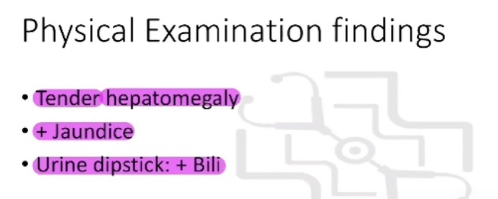
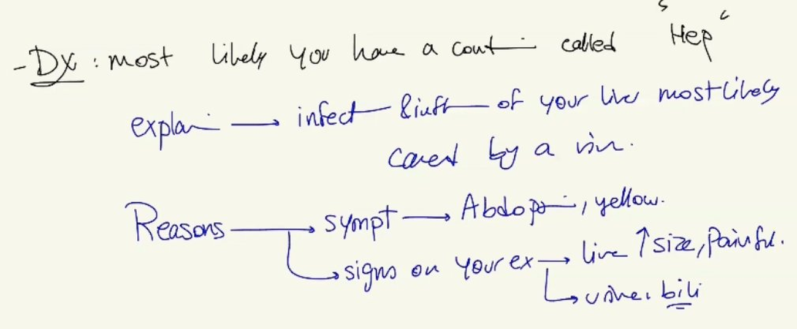

Source: Dr. Amir workshop — Med workshop 2 - 2026 / CLASS 5 UNWELL (Aug 2026 drop) · Specialty: general_practice
A young man ('Max') feels unwell for a few weeks. Three lead points anchor the stem: (1) sauna exposure with friends also affected (clustered recreational-water infection), (2) multiple people affected (common-source outbreak), and (3) PrEP use (implies MSM, STI risk, and renal monitoring). Tasks: 6-minute history, examination on card, diagnosis + differentials. Leading diagnosis: viral hepatitis on a background of high STI risk.
Quick differentials from the stem: Legionella (atypical pneumonia), Hepatitis A/B/C, Pseudomonas (hot-tub folliculitis), and STIs including HIV seroconversion.
Rule: if it is specified in the stem, it is there for a reason - do not skip it. Sauna/spa exposure raises Legionella, Hepatitis A and Pseudomonas.
Legionella: fever/chills, cough, shortness of breath, diarrhoea (classic accompaniment).
Hepatitis: abdominal pain (probe if present), nausea/vomiting, jaundice (yellow skin/eyes - positive), dark urine, pale stools, itch.
Pseudomonas (hot-tub folliculitis): rash anywhere on the body.
Sexual history is mandatory. Screen (sexually active, condoms), then risk-assess partners (stable relationship, multiple partners, gender), method (anal/oral), and prior STIs.
STI symptom screen - HIV seroconversion (sore throat, rash, night sweats, lymphadenopathy, fever), syphilis/herpes (genital rash/ulcer), urethritis/epididymo-orchitis/prostatitis (penile discharge, scrotal swelling/redness).
Malignancy (weight/appetite loss, lumps, night sweats, family history), travel history, mood, drugs. Dr Amir's HEMI ADCOP framework: Hepatic, Environmental/exposure infections, MSM/sexual transmission, Infections (systemic), Anaemia/Autoimmune, Drugs, Cancer, Organ disease (CKD - relevant on PrEP), Psychological.
Examination card: tender hepatomegaly, jaundice, urine dipstick bilirubin positive. Explain hepatitis as infection and inflammation of the liver, most likely viral - do not name the specific type clinically; blood tests confirm. State reasons (abdominal pain, jaundice, tender enlarged liver, bilirubinuria).
Differentials communicated: Legionella and Pseudomonas from the sauna; HIV and syphilis from the sexual history; malignancy; other viral/travel infections; and CKD screening because of PrEP.


Reviewed by: history-taking-expert (Australian clinical supervisor) · fact-checked against the irStudy medical textbook RAG index.